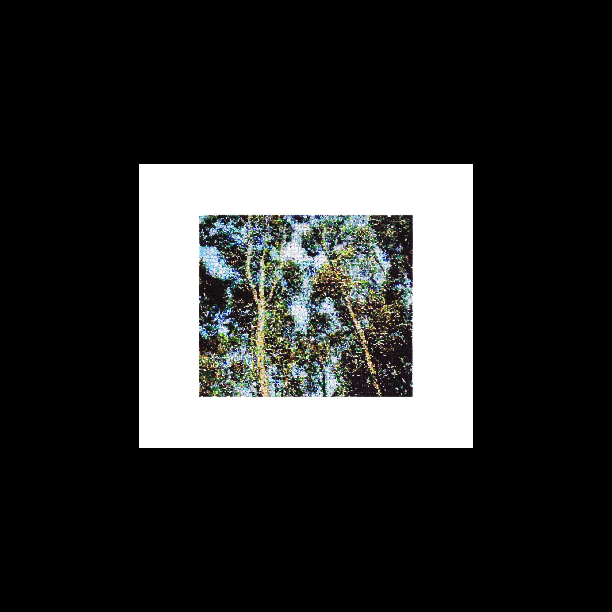
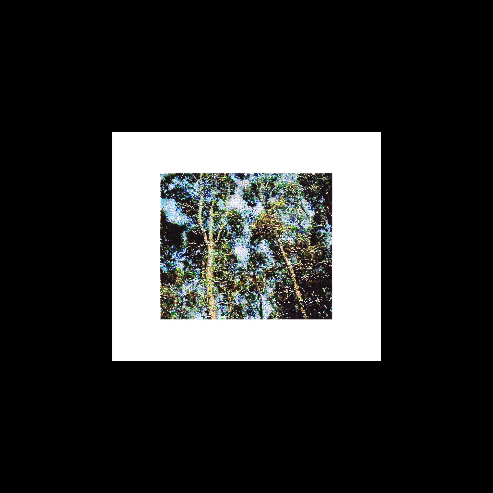
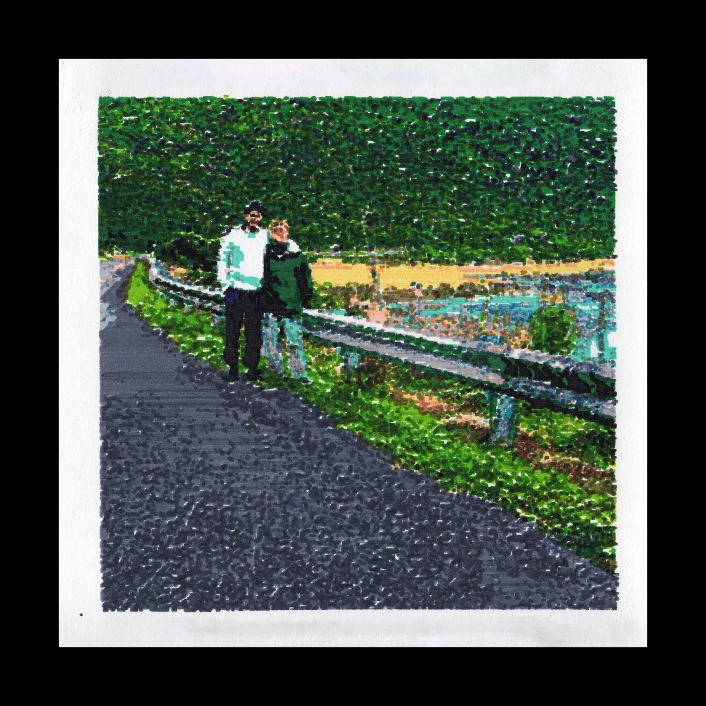
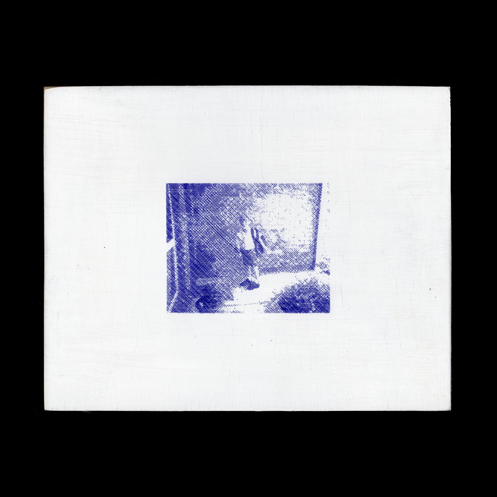
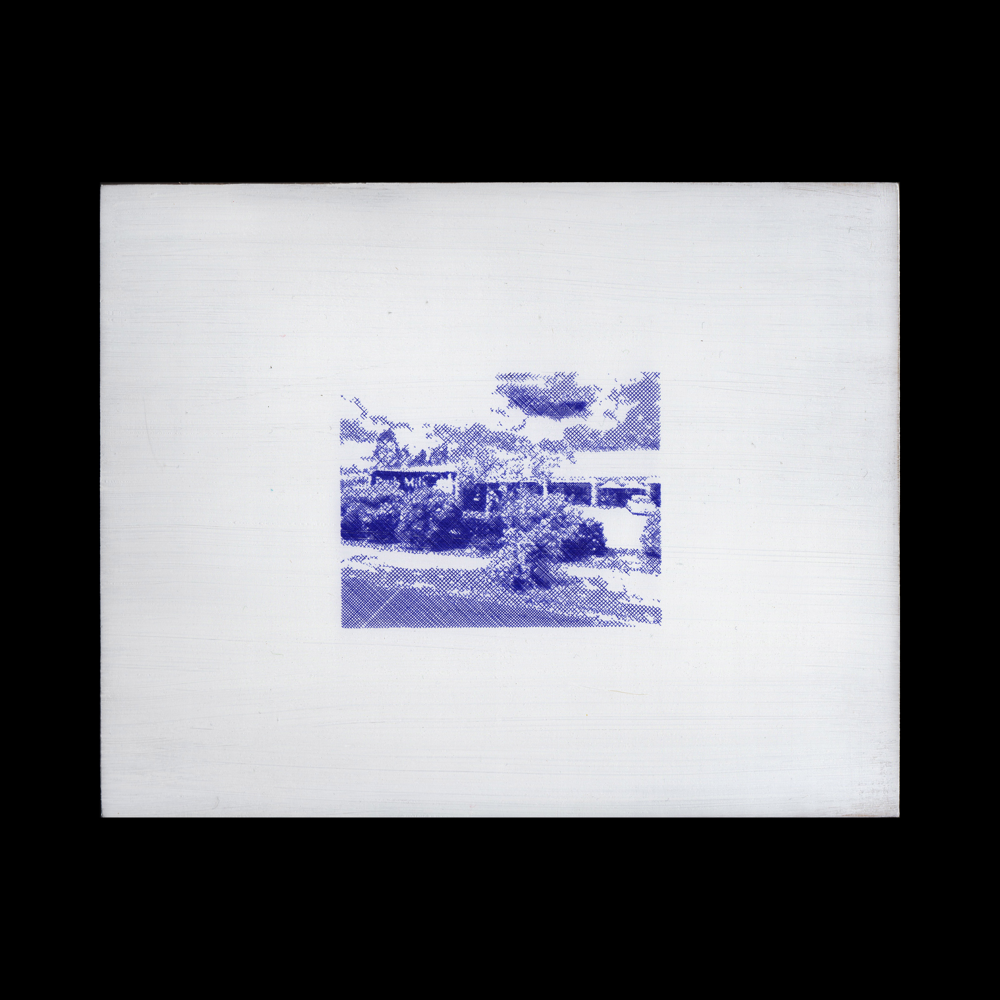
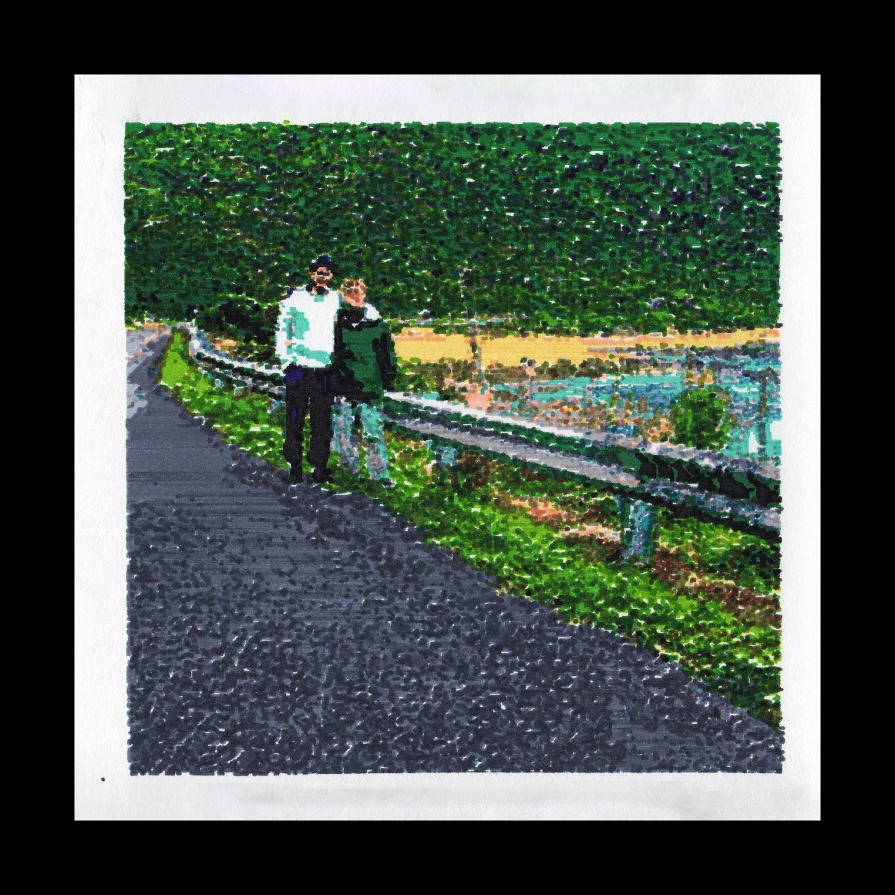
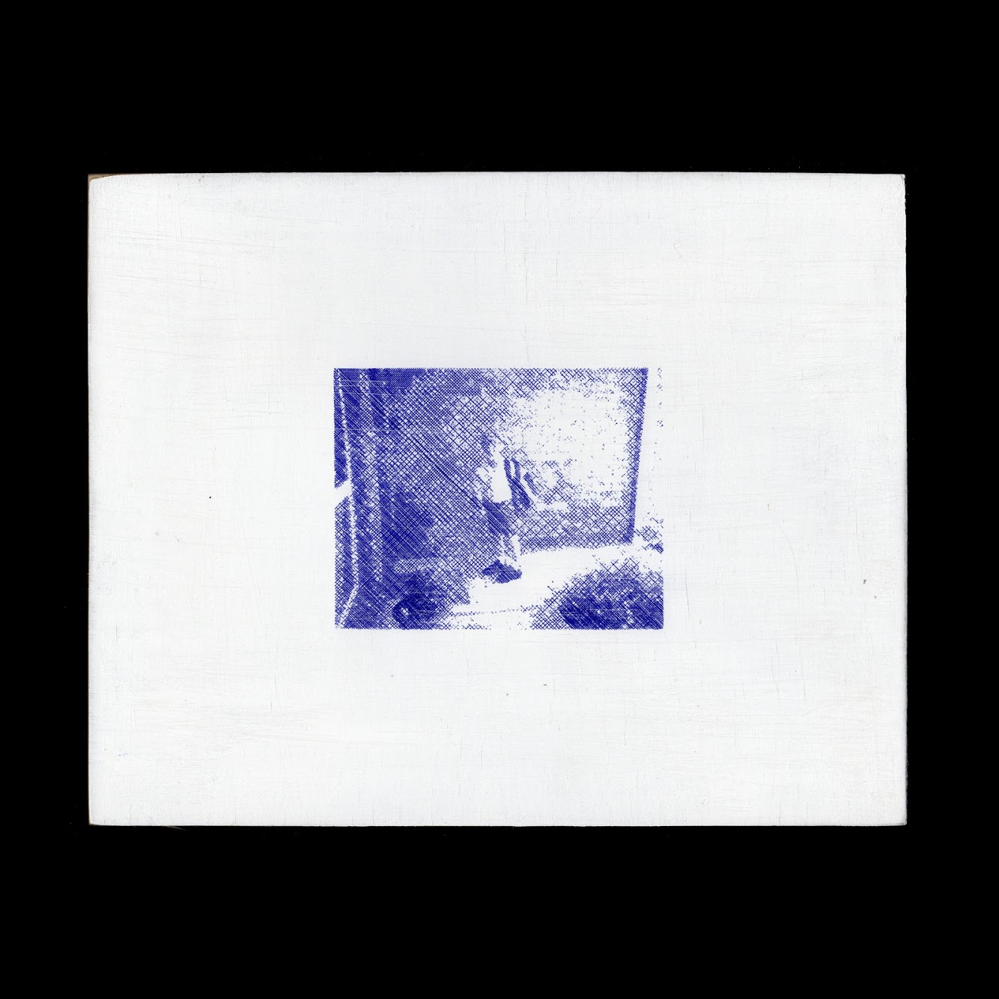
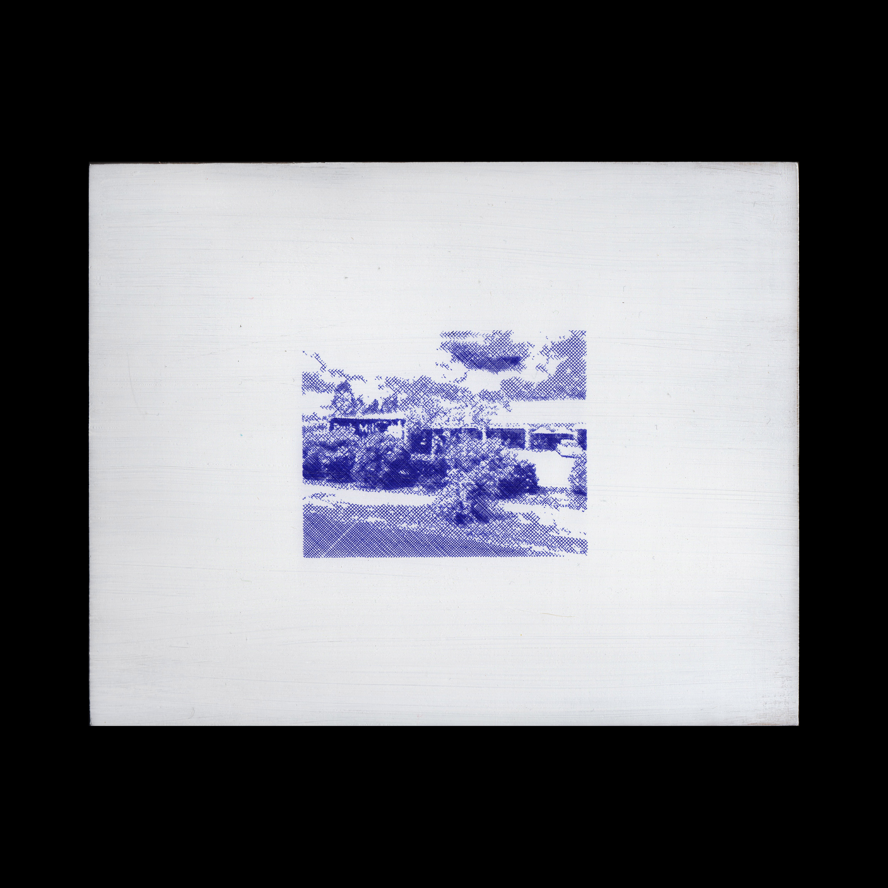
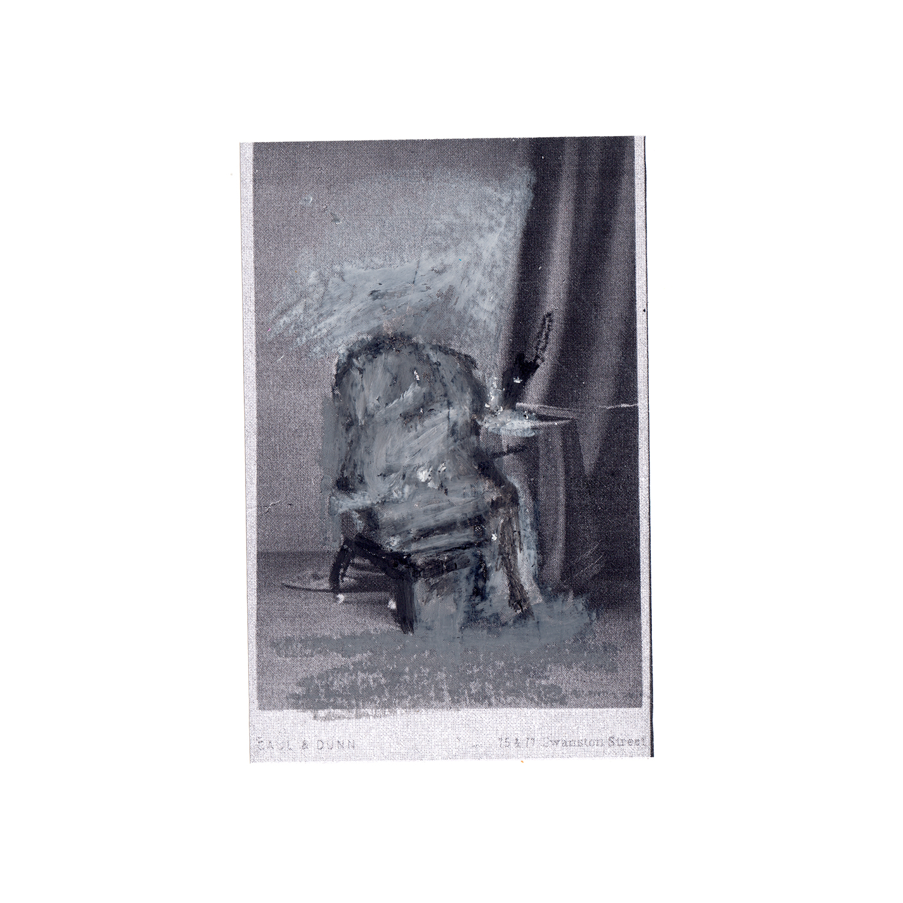
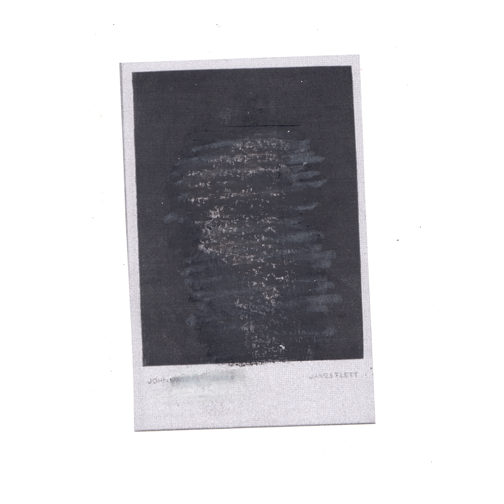

very lovely food
.brandIdentity
.brandStrategy
.design
w.i.p
*small publication, flirting at the intersections of zines +- brochures +- magazines +- cookbooks. VLF challenges the traditional cookbook format.
*aims to reframe plant-based food away from a "substitute" mindset.
very lovely food is a celebration of individual ingreadients that dont pretend to be something they're not.
*the projects visual language that borrows from early 70’s instructional cooking magazines, merged with a vernacular photographic style - the visual language aims to avoid aspirational tropes in lue realistic and achievable home chef
outcomes.


missing persons (2021), self published
Missing Persons is constructed through the collection and consideration of photographs sourced from
the State Library of Victoria. The work responds critically to the cataloging and naming practices adopted
by the State Library. Missing Persons reframes these practices as an imposed, white ontology of ‘normative’
citizenry. This ontology is supported institutionally, through the use of a taxonomy of ‘othering’, applied at
will to those not immediately identifiable as Anglo-European.
Images in the State Libary’s digital collection that contained one of four specific search phrases* in
their title. 1456 photographs have been collected. The four phrases were chosen due to the absence of any
nominal, ethnic, or cultural adjective. As such, they collectively constitute an implicit construction of ‘a
normative person’ by the State Library. The collected images have been used as a dataset to train a generative
adversarial network, that produces portraits of new, artificial ‘normative’ citizens.
Missing Persons problematizes the unspoken whiteness of these normative categories as a regime of white
privilege. Questioning the thresholds and complexities of the ‘artificial’ and the interlaced role archival
institutions play in the construction of social histories.
1. “A WOMAN”
2. “A MAN”
3. “UNIDENTIFIED MAN”
4. “UNIDENTIFIED WOMAN”
34 pg, 115gsm ENVIROCARE.
Saddle Stitch, Staple Bound.
First Edition of 20.
copy for your information (2021)
Constructed from images of both objects made & found, Copy For Your Information acts as an ongoing private -> public
archival interface.
The genesis of each image-object in the collection, can be indexed to an original non-fungible physical
image-object held within the artist's private collection. From these physical image-objects, a
'New-Digital-Image' is created using a flatbed scanner.
Copy For Your Information manifests as the digital equivalent pairing to the physical image-object.
Non-fungible and indexable. The work makes a provocation that any further 'reproductions' of the images
held within the collection, should be considered a "copy for your information".
JPEG
NFT, Ethereum Blockchain.
Various 1 of 1 image-objects.
.jpg)
.jpg)
.jpg)
.jpg)
.jpg)
collider: Construction and Destruction (2021)
.photography
.artDirection
.contributingMember
Construction and Destruction (2021)
Ten minutes and another truck crawls its way past, delivering supplies to the concrete manufacturer
across the road. As the sun speeds towards the horizon, the procession of cars and utes laden with
fishing equipment becomes more frequent - their journey ends at the end of the road by the river,
which is now some 400m east of where it once lay, displaced, seemingly without a trace.
COLLIDER began to retrace the First Ecologies of the Maribyrnong and Birrarung river systems in an
effort to unlearn and question our settler/occupier histories. In doing so, we found enormous acts
of violence committed against the First Ecologies of these systems hiding in plain sight; expertly
forgotten. Like so many aspects of colonisation, the everlasting and irreversible effects on these
systems are disturbingly quiet and largely unquestioned. In 1879, John Coode recommended a series
of alterations to the Maribyrnong and Birrarung rivers. The Maribyrnong was deconstructed and
re-routed to prevent the frequent and necessary flooding of the area. Once a vast wetland, the
area is now host to concrete factories, oil storage facilities and a sugar processing port. The
activity of industry silences the echoes of a once thriving natural ecosystem. A destructive event,
on a scale so large it’s almost unimaginable in the minds of settlers/occupiers.
In response to the discovery of this unseen marker of violence and colonisation, COLLIDER sought to
return the water to its original place. The collective has produced a series of performative
photographic works through returning water from the reconstructed bank of Maribyrnong to various
First Sites of the river, that have since been destroyed. A small gesture we hope makes visible the
extent of the far reaching damage caused by colonisation; past, present, and ongoing.
collider web design
.webDesign
.artDirection
.collaboration
designed in collaboration w. http://www.zachmicallef.com/
https://collider-collective/
https://collider-collective/work.html
https://collider-collective/store.html
platypus publication
.brandIdentity
.webDesign
A cheeky little website that celebates an "early-internet" type jankyness. The breif was centered around a website that is both interactive and fun to use.
https://platypuspublication.com/Negotiated Value: Vernaculars
This paper explores the relationship between vernacular photographs and photographic / art discourse, in an attempt to understand why vernaculars are excluded from photographic conversations, yet included within art practice when used as found objects. This will be investigated through looking at the existing conditions within photographic discourse, and through an exploration into what conditions could be met in order to understand vernacular photography’s inclusion within a larger artistic discourse.
linktomirrorpaper.comdigital to anolog print making
expeimental print making utilising cnc x-y axis plotter.
 

 






unresolved [white] histories (2020)
 